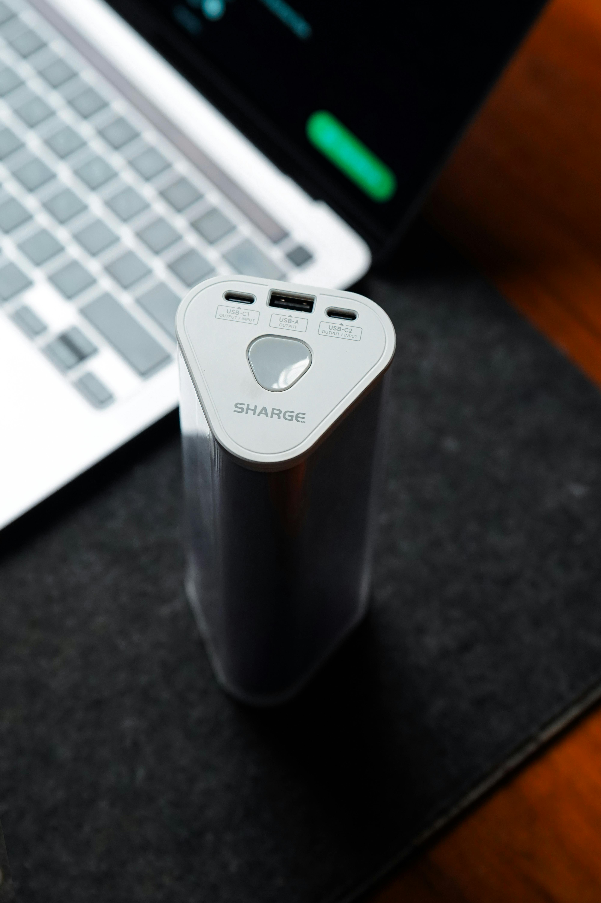
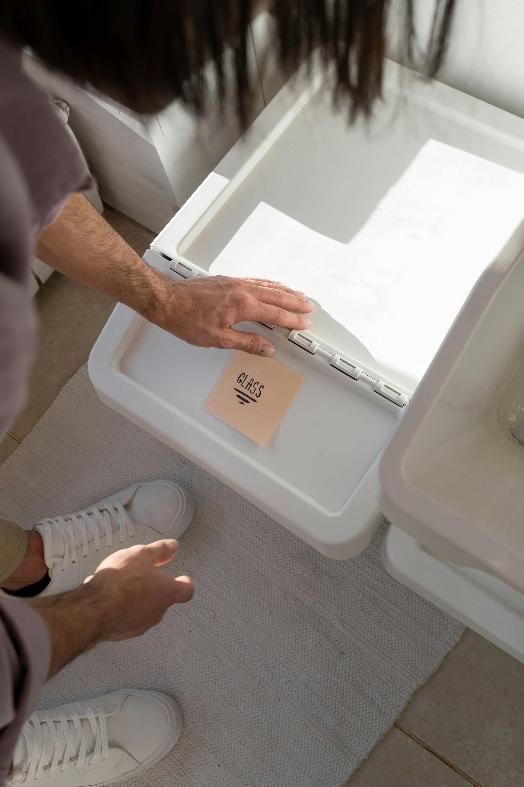

Energy-Efficient Devices
Smart plugs, sensors, and lighting controllers that quietly cut power use without making anyone change how they already work.
GreenTech Solutions
Green tech, green chile, green future.
We're a small Albuquerque based startup building eco-friendly tools for small and medium businesses. GreenTech Solutions is a subsidiary of GreenChile LLC. Yes, the name is a little corny. We thought it fit.
Our goal is to make sustainability feel practical instead of overwhelming. We build energy-efficient devices, smart recycling systems, and carbon tracking software for the kind of offices that want to do better but don't have a sustainability department to figure it out for them.

Smart plugs, sensors, and lighting controllers that quietly cut power use without making anyone change how they already work.

Bins that sort waste automatically. Less staring at the lid trying to remember if pizza boxes count, more actually recycling.
Our dashboard pulls together your energy and waste data so you can actually see what's happening across your business. No spreadsheets required.
Most small businesses care about doing the right thing environmentally. The hard part is knowing where to start, and not wanting to spend three weekends figuring it out.
We focus on tools you can plug in, log into, or unbox and start using on day one. Nothing fancy, nothing that needs a consultant. The kind of stuff that actually gets used instead of sitting on a shelf because it was too complicated to set up.